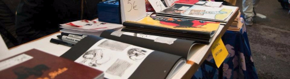

Viikottaisten Jyväskylässä pidettävien sarjakuvatapaamisten lisäksi meidät löytää lähes aina Helsingin sarjakuvafestivaaleilta ja Tampere kupliista, joissa pyrimme pitämään myyntikojua ja julkaisemaan uudet albumimme. Joskus eksymme näiden lisäksi vielä erinäisiin coneihin ja Vanhan kirjan talvi -tapahtumaan.
Olemme pitäneet 24 Hour Comic Day -tapahtumia Jyväskylässä jo vuodesta 2010 lähtien. Seuraavan kerran tapahtuma järjestetään syksyllä 2017. Jotain meidän tuotoksia on nähtävillä vuosilta: 2010, 2011, 2012, 2014 ja 2016.
Olemme järjestäneet myös useita näyttelyitä ja meillä on pysyvä näyttelytila Jyväskylässä ravintola Mustassa kynnyksessä, jossa on kolmen viikon välein vaihtuva näyttely.